Data-Oriented Programming and Job System
代码的执行并没有我们看上去那么简单。由于代码是执行在操作系统和硬件之上的，所以要想编写一份高性能的程序，必须要考虑到硬件和 OS。
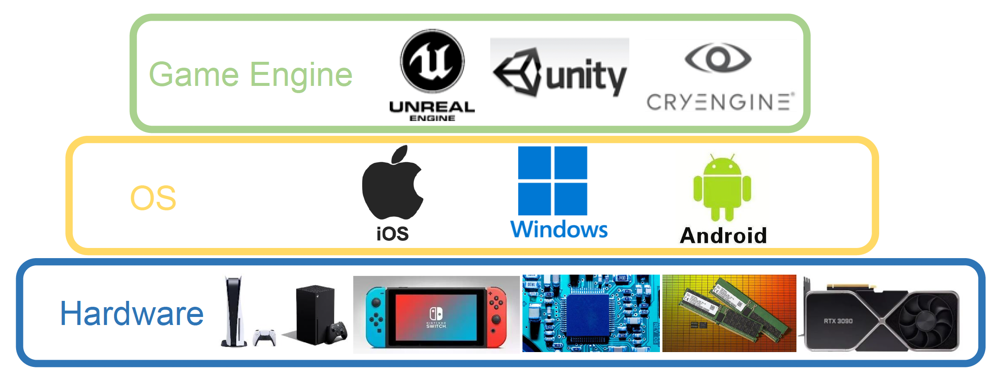
总结：CPU 各种操作的大致时间
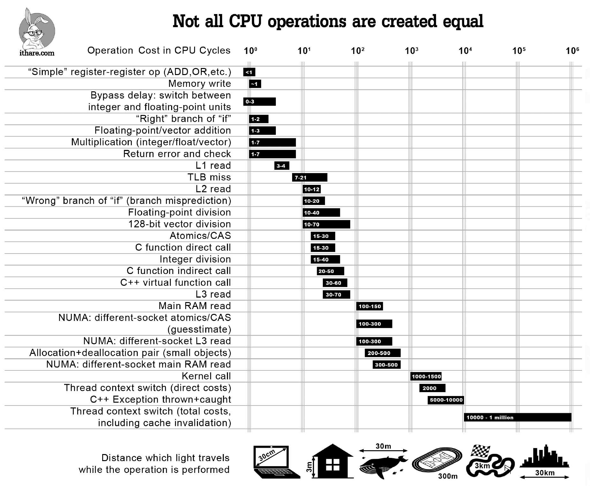
Basics of Parallel Programming
在学计算机系统时，我们认识了摩尔定律(Moore's Law)：集成电路（IC）中的晶体管数量大约每两年翻一番。但是从最近十几年开始，这条定律逐渐失效，晶体管数量增长放缓，即将触碰到物理极限了。因而多核处理器(multi-core processors)成为了新的工业发展趋势。

进程与线程

-
进程(process)：
- 应用（或程序）的实例
- 有自己的内存区域
-
线程(thread)：
- 抢占式多任务
- OS 任务调度的最小单位
- 必须位于进程中
- 相同进程中的线程共享内存
多任务的类型
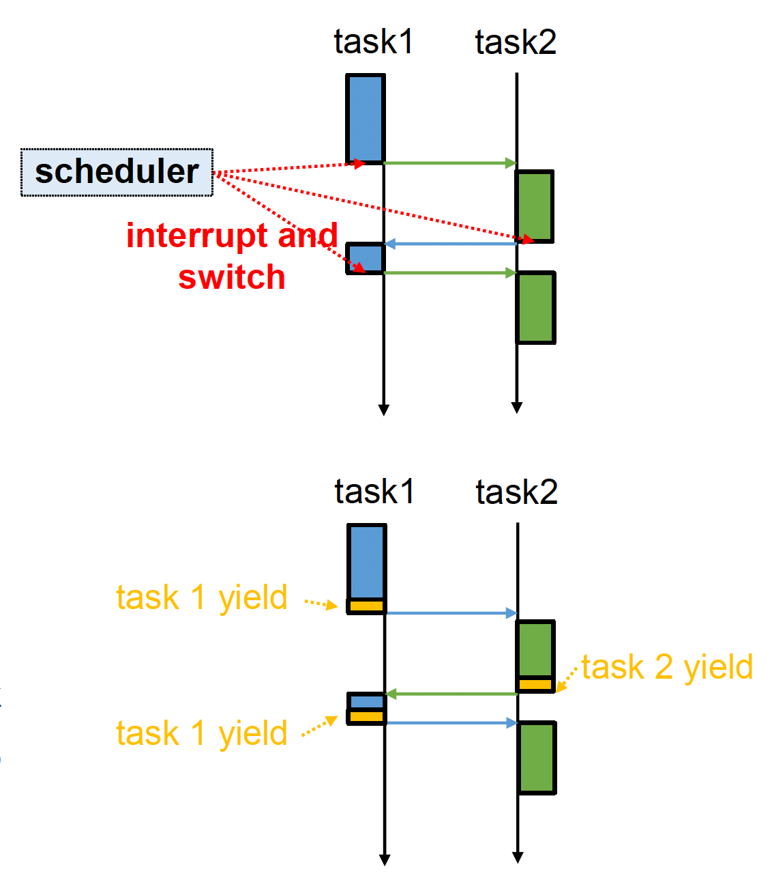
-
抢占式多任务(preemptive multitasking)
- 当前执行的任务可在调度器指定的时间后被中断
- 调度器接着决定下一个要执行的任务
- 该策略应用于大多数操作系统中
-
非抢占式多任务(non-preemptive multitasking)
- 任务必须被显式编程以让出控制权
- 任务之间需要协作才能使调度方案生效
- 目前许多实时操作系统（RTOS）也支持这种调度方式
对于一个多线程程序，线程间的上下文切换(context switch)自然是无法避免的事情。它是指保存当前线程状态，以便下次继续从此处开始执行的行为。更具体地，
- 状态包括寄存器、栈以及其他 OS 需要的数据
- 线程的上下文切换包含额外的用户-内核模式切换
- 上下文切换后的缓存失效(cache invalidation)成本更高（因为原来缓存里的数据很多时候对新线程而言毫无意义，所以一开始会有很多的缓存失效）

在并行计算中，我们经常会遇到以下并行问题：
- 令人尴尬的并行(embarrassingly parallel problem)（或完美并行(perfect parallel)）：并行任务之间几乎没有依赖关系或通信需求
- 不令人尴尬的并行(non-embarrassingly parallel problem)：并行任务之间需要通信

常遇到的另一个问题是数据竞争(data racing)，即多个线程同时访问相同的内存位置，并且其中至少有一个线程是在对其进行写操作。

为避免这一问题，一种方法是采用叫做锁(lock)的阻塞算法(blocking algorithm)。
- 保证同一时间只有一个线程能获取锁
- 为共享资源访问部分设置一个临界区(critical section)，只有拿到锁的线程才能进入这段代码
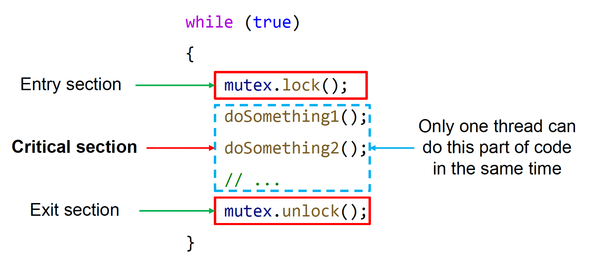
锁的问题
- 线程的挂起和恢复会带来额外的性能开销
- 若持有锁的线程异常退出，被挂起的线程将无法恢复
- 优先级反转问题：高优先级的任务可能会尝试获取已被低优先级的任务持有的锁
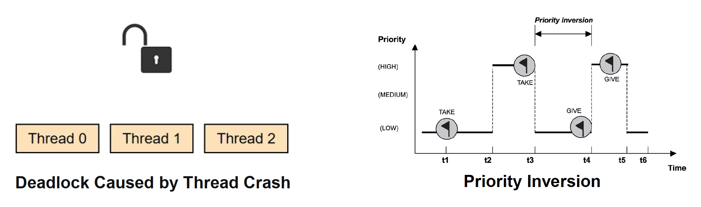
于是我们引入一种叫做原子操作(atomic operations)的无锁(lock-free)编程。常见的原子操作有：
-
原子加载和存储
- 加载(load)：将数据从共享内存加载到寄存器或线程的特定内存中
- 存储(store)：将数据移动至共享内存中
-
原子读-改-写(read-modify-write, RMW)
- 测试并设置(test and set)：将 1 设置到共享内存，并返回之前的值
- 比较并交换(compare and swap)：若共享内存中的数据等于预期值，则更新该数据
- 获取并增加(fetch and add)：将共享内存中的数据加上一个值，并返回之前的值
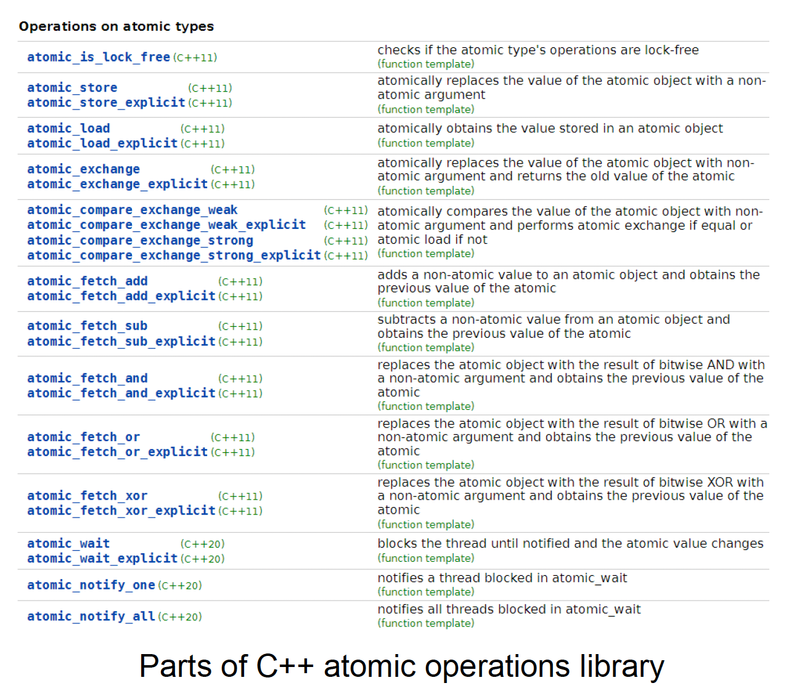
除了无锁编程外，还有无等待(wait-free)编程。理论上它能保证所有线程尽可能占据所有的 CPU 资源。但实际上在一个复杂系统中，这是很难做到的，因此仅在部分对性能有极高要求的场合中用到，在这里我们不必深究。
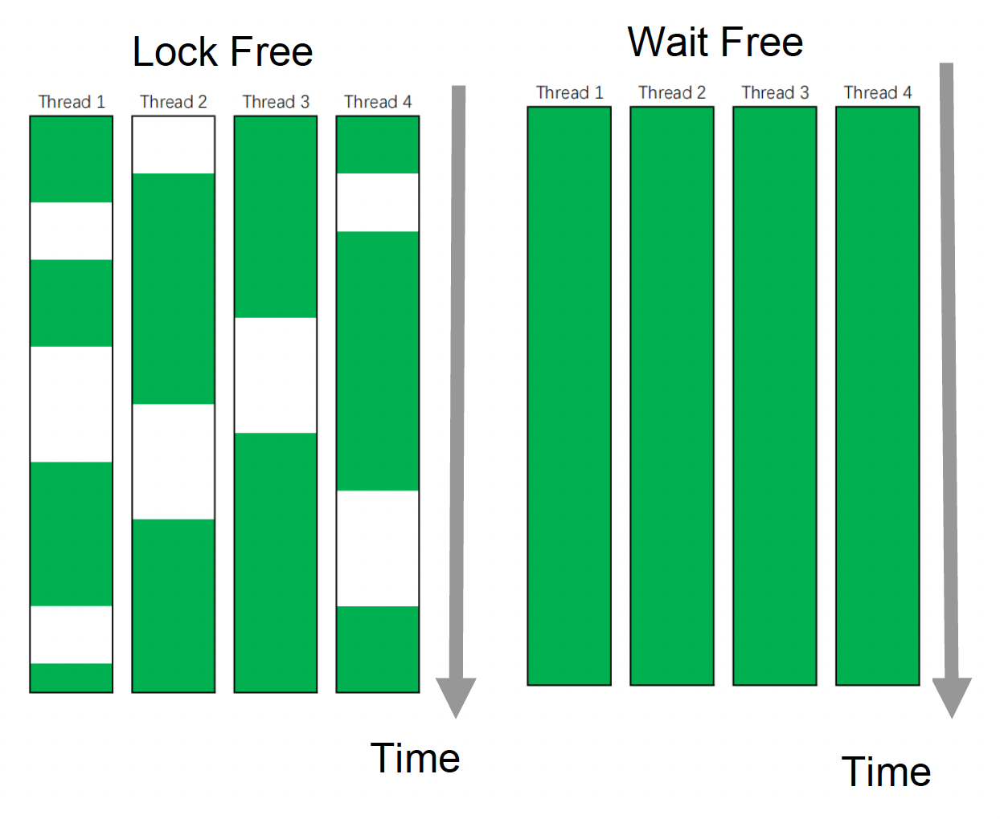
出于性能需求，编译器和 CPU 在优化过程中往往会对指令进行重排(reordering)。但有时候这样会给多线程编程带来困扰。如下图所示，如果按正常顺序执行，线程 2 就会触发断言的（除非还有别的线程修改 b 的值）。但由于指令重排，线程 1 中 a = b + 1; 和 b = 0; 两条语句可能会颠倒，此时断言就不再触发。
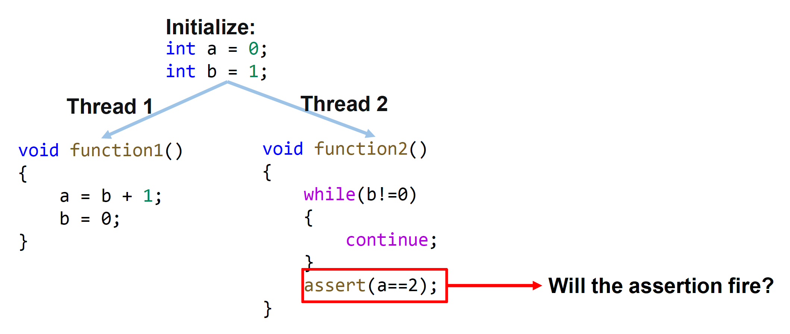
更麻烦的是，像这种乱序执行在各种 CPUs 中都会发生，而且它们：
- 会采用截然不同的优化策略
- 提供不同类型的内存顺序
- 因此并行程序需要不同的处理
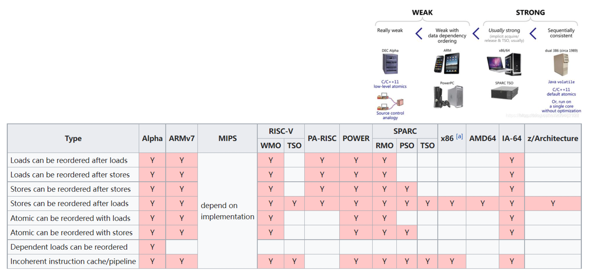
游戏开发中会分 release 版和 debug 版。后者的执行顺序基本上认为是对的，但前者由于采取了更激进的优化策略，执行逻辑可能往往和程序员想的不一样，因而产生一些意想不到的 bug，而且这种 bug 很难排查。
Parallel Framework of Game Engine
下面来看游戏引擎中是如何实现并行编程的。
Fixed Multi-thread
最简单的做法，也是大多数现代游戏引擎的做法是为每一类任务（游戏逻辑的一部分）分配一个固定的线程。比如一个专门负责渲染，一个专门负责模拟等。

优点：易于实现
缺点
-
线程（核心）的工作量不均衡
- 短板效应，整个任务的完成得等那个工作量很大的线程执行完毕
- 不能直接将某个线程的任务分出一点给另一个空闲线程完成，因为这破坏了局部性；也不能让它们共享内存，否则会出现数据竞争问题
-
当处理器核心增多时无法扩展
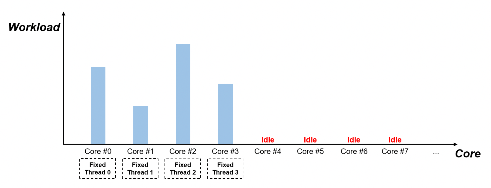
Thread Fork-Join
第二种方法叫做分叉-合并(fork-join)。它仍然基于第一种方法，但特别适合用来解决数据可并行的任务。
- 比如模拟线程的动画计算非常复杂，那它会创建一些子线程进行并行计算，最后合并子线程的结果
- 使用线程池(thread pool)来组织频繁的线程创建和销毁

问题
- 对负责撰写逻辑的程序员而言不容易实现（需要手动分割工作、确定工作线程数量等）
- 线程过多可能导致额外的上下文切换的性能开销
- 各线程（核心）间的工作负载仍然不均衡
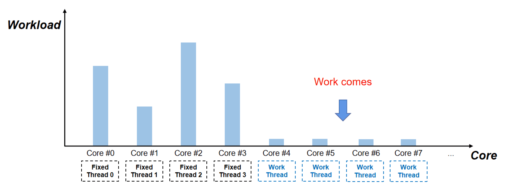
Unreal Parallel Framework
Unreal 的并行架构中有两类线程，分别是：
- 命名线程(named thread)：由其他系统创建，并附加到并行框架中
- 工作线程(worker thread)
- 三种优先级：高、中、低
- 数量根据 CPU 核心数确定
- 和分叉-合并方法类似

Task Graph
任务图(task graph)是一种更复杂的方法。它是一个有向无环图（DAG），用节点表示任务，用边表示依赖关系，从而确定任务执行的先后顺序以及是否可以并行执行。
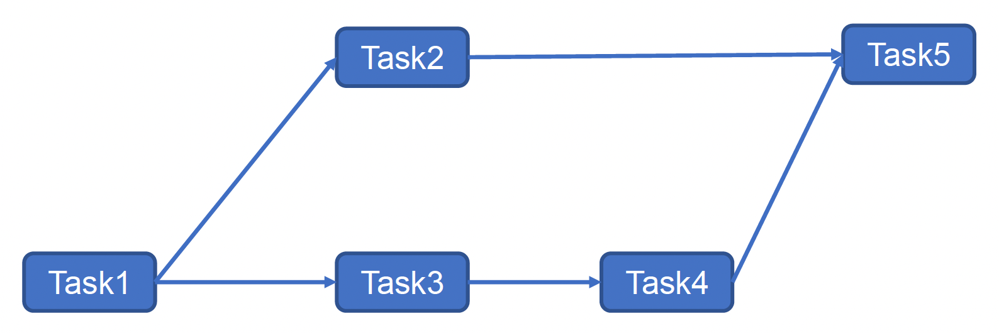
通过链接(links)来构建任务图。

问题
- 它是一种静态方法，难以应对动态环境
- 它要求任务必须完整做好才能继续下一个任务，但在游戏中有时会出现执行了一半就要转头做另一项任务的情况
Job System
Coroutine
协程(coroutine)是一种轻量级的执行上下文。每个协程也都有自己的用户栈、寄存器等。它的一大特点是协作式的执行，这意味着它可以（随时）交互式地切换到另一个协程中，切换开销会很小。因而作业(jobs)的创建正是在协程中完成的。
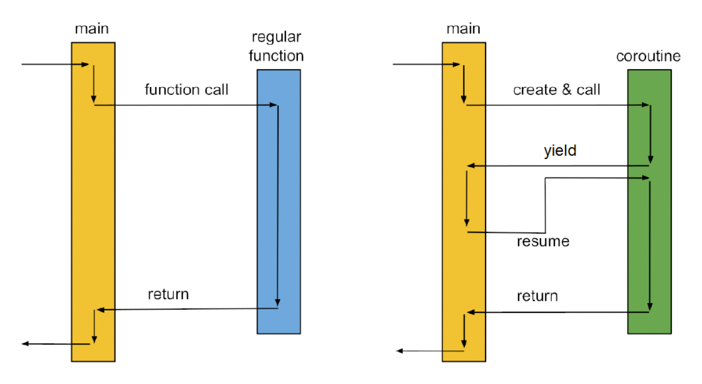
协程 vs 线程

-
协程
- 由程序员调度
- 在线程中执行
- 上下文切换更快，无需切换到内核模式
-
线程
- 由操作系统调度
- 位于进程内
- 上下文切换成本高，需切换到内核模式
协程分为两类：
-
有栈协程(stackful coroutine)：协程拥有一个独立的运行时栈，该栈在协程
yield（挂起）之后被保留- 功能更强大，允许在嵌套栈帧内进行
yield操作 - 可以像普通函数一样使用局部变量
- 需要更多内存，来为每个协程预留栈空间
- 协程的上下文切换耗时更长
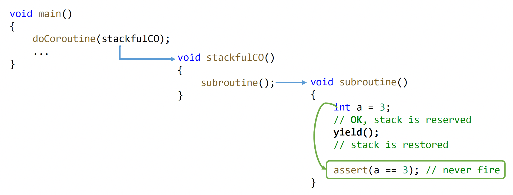
- 功能更强大，允许在嵌套栈帧内进行
-
无栈协程(stackless coroutine)：协程在 yield 时没有独立的运行时栈需要保留
- 只有顶层例程可以 yield（而子例程在没有栈的情况下不知道返回何处）
- 恢复执行所需的数据应与栈分开存储
- 无需额外内存空间
- 更快的上下文切换
给少部分高手使用的

Fiber-Based Job System
基于纤程的作业系统(fiber-based job system)允许通过创建作业而非线程来实现多任务。
- 纤程(fibers)类似于协程，不同之处在于纤程由调度器进行调度
- 线程是执行单元，而纤程则是上下文环境；每个处理器核心对应一个线程，以最小化上下文切换的开销
- 任务在纤程的上下文中执行

一个原则是尽可能保证一个工作线程对应一个核心，以最小化线程上下文切换的开销（因为单核中的多工作线程仍会遭受上下文切换的影响）。

现在来看作业是如何被调度的。
-
全局作业(global job)：
- 将作业分配给相对空闲的工作线程，确保各线程负载均衡
- 采取 LIFO 模式（即栈）

-
作业依赖性(job dependency)：
- 多数时候作业间的依赖关系形成一棵树
- 有时要先执行优先级更高的作业，但资源有限，所以会把低优先级的作业暂时放到一个等待队列中；这个作业和新进来的高优先级作业之间建立了一个依赖关系，等这个高优先级作业结束后，该作业又回到原来的线程中运行
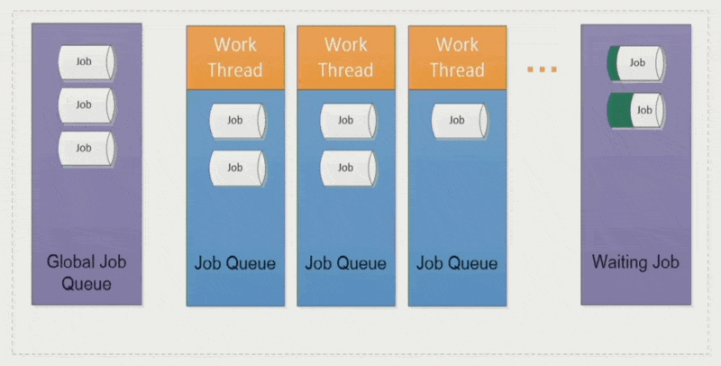
-
作业窃取(job stealing)：空闲的工作线程会从其他线程中「偷」些作业过来，避免某些线程执行时间过长而拖累整体表现
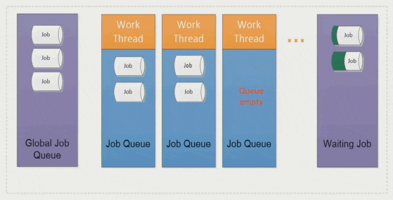
优点
- 任务调度实现容易
- 便于处理任务的依赖关系
- 作业的栈是独立的
- 减少频繁的上下文切换
缺点
- C++ 原生不支持纤程
- 不同操作系统间的实现存在差异
- 存在一些限制（比如
thread_local无效）
Programming Paradigms
游戏引擎中有很多不同的编程范式(programming paradigms)，而其中某些编程范式在实践中被广泛使用。并且编程语言往往不局限于采用某一种特定的范式。
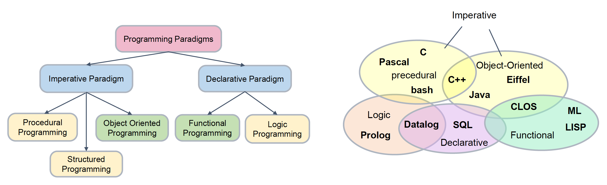
下面来看两类我们熟知的范式：
-
面向过程编程(procedural oriented programming, POP)
- 采用逐步方法，通过一系列指令将任务分解为变量和例程（或子例程）的集合
- 无法用这种方式编写游戏引擎，因为数据通常不会良好维护的，且现实世界对象之间的相互关系是很复杂的
-
面向对象编程(object oriented programming, OOP)
- 基于「对象」(objects)的概念，对象包含了数据和代码
- 以面向对象的方式对现实世界抽象化是很自然的
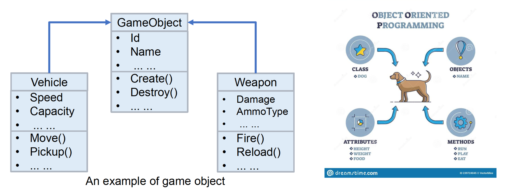
OOP 的问题
-
代码该放在哪个对象里：比如造成伤害的代码是放在攻击者这边还是放在被攻击者这边
-
方法分散在继承树内：难以知道父类是否有方法实现，经常要通过检查很多不同的类与方法来寻找答案
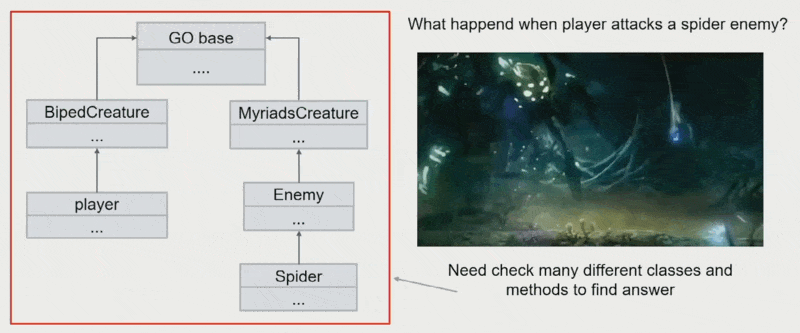
-
混乱的基类（如果将通用方法都放在基类里）
代码示例
class ENGINE_API AActor: public UObject { ... const FTransform& GetTransform() const; const FTransform& ActorToWorld() const; FVector GetActorForwardVector() const; FVector GetActorUpVector() const; FVector GetActorRightVector() const; virtual void GetActorBounds(...) const; virtual FVector GetVelocity() const; float GetDistanceTo(constAActor*OtherActor) const; virtual void SetActorHiddenInGame(boolbNewHidden); bool GetActorEnableCollision() const; bool HasAuthority() const; UActorComponent* AddComponent(...); void AttachToActor(...); void DetachFromActor(const FDetachmentTransformRules& DetachmentRules); bool GetTickableWhenPaused(); bool IsActorInitialized() const; void ReceiveAnyDamage(...); void GetOverlappingActors(...) const; virtual void SetLifeSpan(float InLifespan); virtual void Serialize(FArchive& Ar) override; virtual void PostLoad() override; ... } -
性能
- 数据分散在各个对象中，而对象创建时被分配到不连续的内存中
- 虚函数丛林
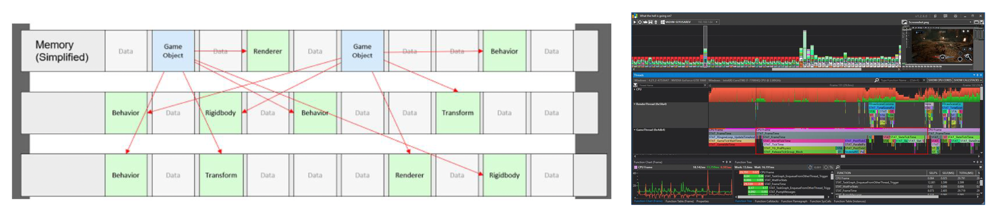
-
可测试性(testability)：OO 设计通常需要大量设置才能进行测试，给针对某个特定模块测试的单元测试带来麻烦
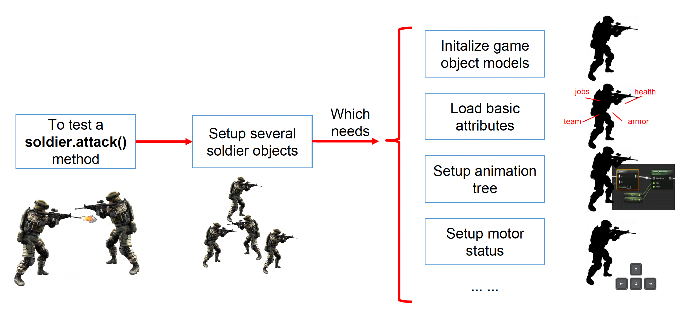
Data-Oriented Programming (DOP)
在正式介绍 DOP 前，我们得先了解一些硬件层面的原理。首先得意识到处理器和内存之间的性能存在巨大差距
- 内存的性能增长比处理器慢很多
- 而且这个差距还在被拉大，这使得内存成为了性能的主要瓶颈
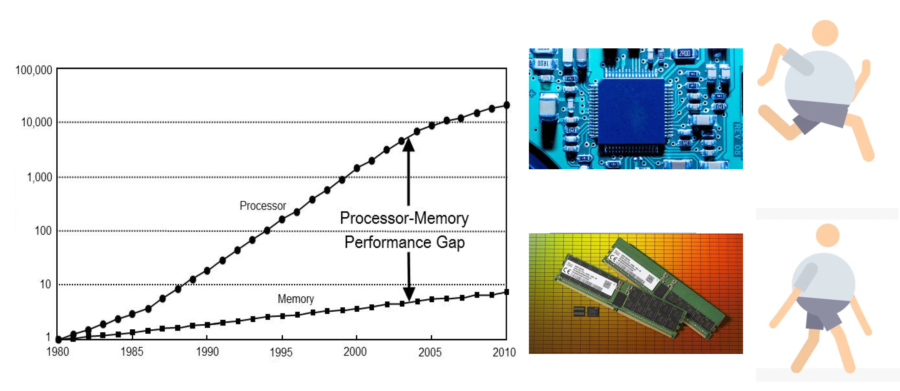
为缓减内存带来的影响，我们引入了高速缓存(cache)。将它置于处理器和内存之间便能加速数据的读取。通常高速缓存自顶（靠近处理器）向下（靠近内存）分成了三级：
- L1：大小在 256KB 至不超过 1MB 之间，但这已足够
- L2：通常为几兆字节，最大可达 10MB
- L3：大于 L1 和 L2，容量从 16MB 到 64MB 不等，在所有核心之间共享
另外，虽然从 L1 到 L3 容量逐渐变大，速度却越来越慢。
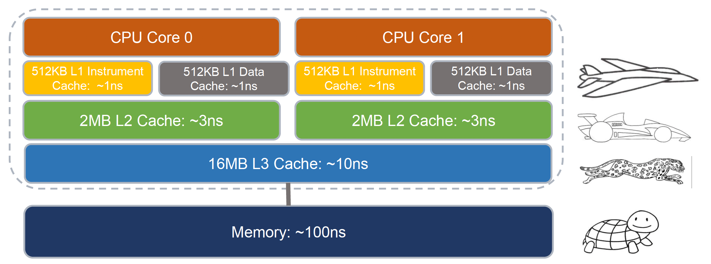
为充分利用高速缓存对性能的提升，在编程时要遵循局部性原理(principle of locality)，包括：
- 时间局部性：处理器在短时间内很可能会重复访问同一组内存位置
- 空间局部性：处理器倾向于使用在相对较近的存储位置中的数据元素
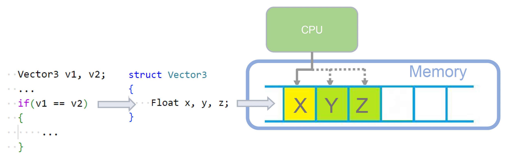
现代 CPU 中 SIMD（单指令多数据(single instruction multiple data)）技术就利用到了这一点。简单来说就是把同类型的数据放进一个向量里，然后某条指令能够处理这个向量，也就是说能一次性能操纵多个内存位置上的数据。
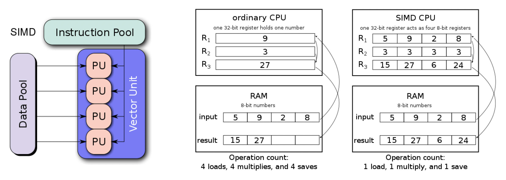
由于高速缓存空间大小有限，如果有新数据进入高速缓存时，发现里面已经被填满了，这时就要挑其中一个数据将其抛弃。一种常用的替换策略是 LRU（最少最近使用(least recently used)），它的思路是抛弃最久未被访问过的缓存行。具体实现为：
- 为每个内存行记录「使用时间」
- 每一时刻下抛弃最久未使用的缓存行
- 当访问了缓存行的数据时，更新其「使用时间」
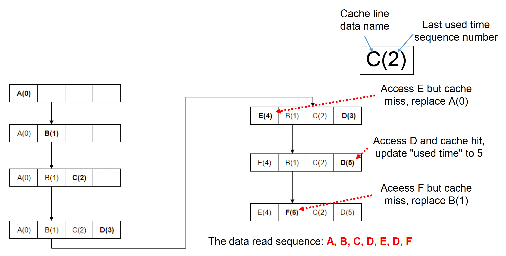
其实还可以采用随机丢弃某个缓存行的策略，其效果也并不比 LRU 差很多。
这里有关 LRU 的实现方法其实不太好：像缓存这种寸土寸金的区域，每个缓存行的计数器就占了不少地方（肯定不会放在内存中，不然缓存有什么意义啊）。另一种做法是双向链表 + 哈希表（见 LeetCode LRU 缓存）。
这里还得补充缓存行(cache line)（或缓存块）的概念，它是一个固定大小的块（通常为 64B），使数据在内存与缓存之间进行传输。
- 缓存只能容纳有限数量的行，取决于缓存大小。比如一个 64KB 的缓存，每行 64B，就有 1024 个缓存行
- 每次加载任何内存时，实际上都在加载一个完整的缓存行字节
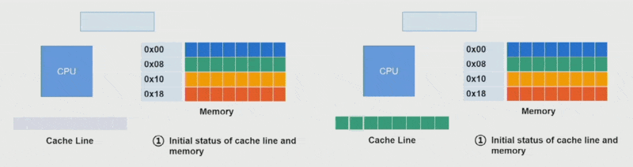
由于这样的特点，在访问矩阵时往往采用按行访问的迭代方式，因为：
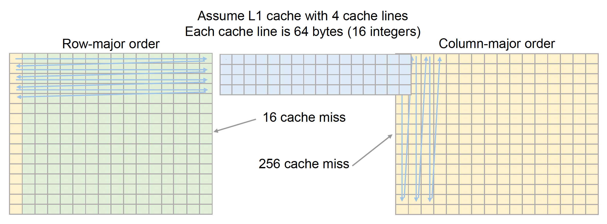
- 当缓存已满时，新行将替换最旧的行
- 当元素不在缓存中时，将加载整行数据
- 所以按列访问的话就会触发大量的缓存失效(cache miss)，严重影响到系统性能
让我们回到正题。面向数据编程(data oriented programming)的核心就是「一切皆数据」。下图指出的各个部分（也包括没指出的）本质上都是数据。
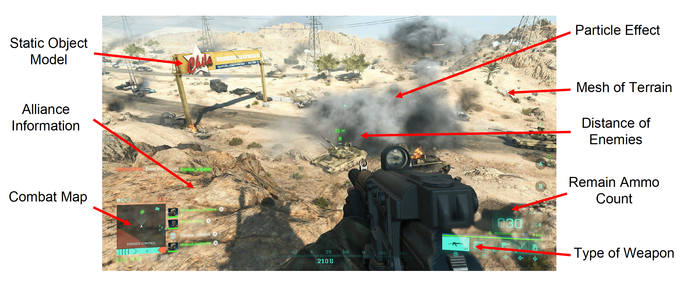
代码（或指令）本质上也是二进制数据。
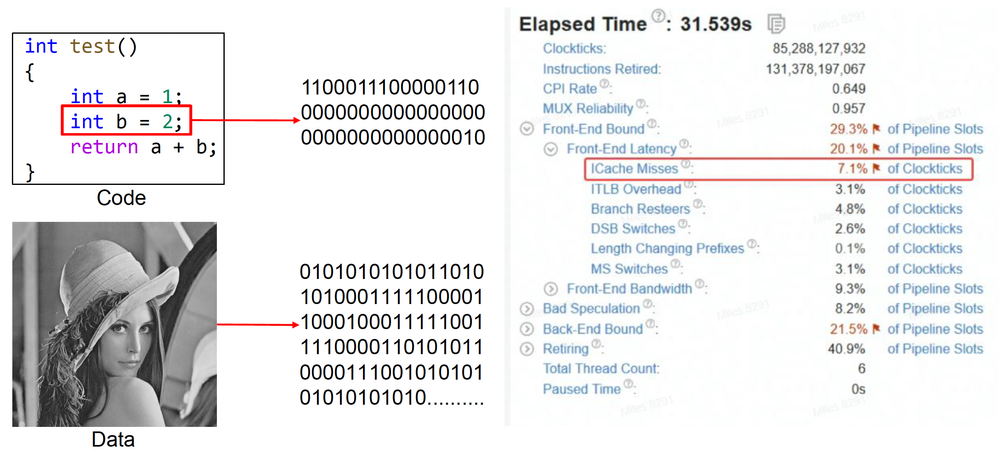
因此我们需要将代码和数据看作一个整体，尽量保证代码和数据在高速缓存中紧密放置，从而保证代码执行完后也能把数据处理完，接下来就交换进下一批的代码和数据了。
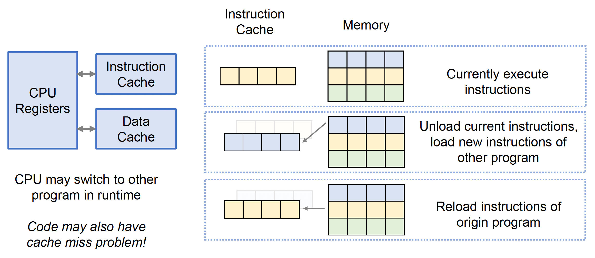
Performance-Sensitive Programming
要想编写出超高性能的代码，第一个思路是要减少顺序依赖。
- 一旦预测错误，就不得不撤销现在进行的工作
- 变量一旦初始赋值，就不要再修改
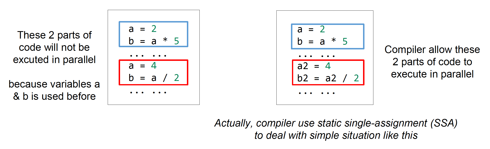
要做到这一点，一个不容忽视的问题是缓存行中的伪共享(false sharing)。每个线程可能都有各自针对同一内存位置的缓存副本，如果其中一个线程要修改这个内存内容，而其他线程也在对其进行读/写操作，那么要确保线程对内存的修改对其他所有线程可见。要做到这一点，要么线程写完后就立马更新其他线程的缓存，要么其他线程在读/写之前先读一遍内存更新缓存内容，但不管怎么做都挺耗时的。所以应尽量避免这一情况的出现。
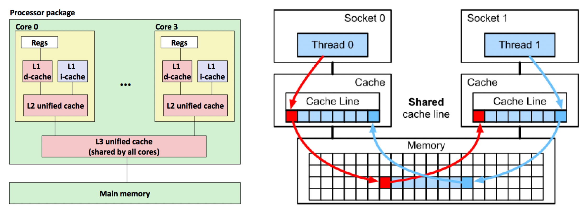
还有一个需要关注的问题是分支预测(branch prediction)
-
CPU 为追求效率，将提前预取指令和数据，通常采用分支预测技术来决定预取内容
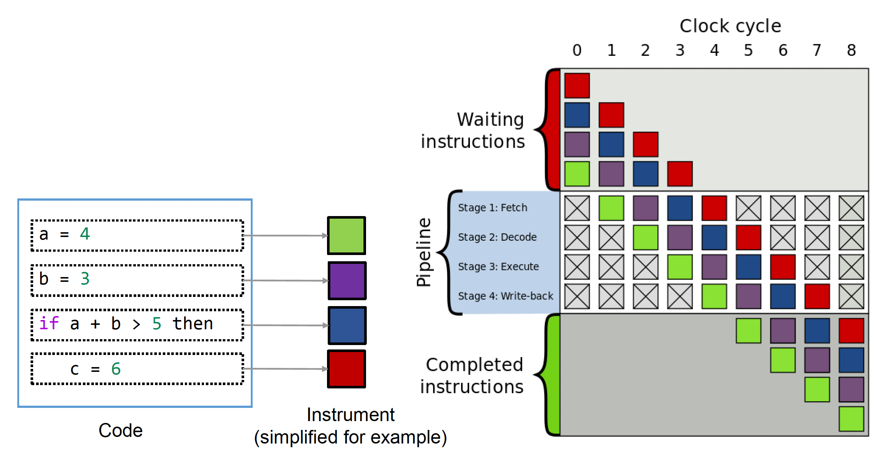
-
但有时候会预测失败，此时各种缓存就会失效，需要等待不少时间，因此尽量避免这一情况出现
-
如下例所示，由于数组元素是乱序放置的，所以处理
11 3这两个元素时，CPU（沿用分支历史）的预测都是错误的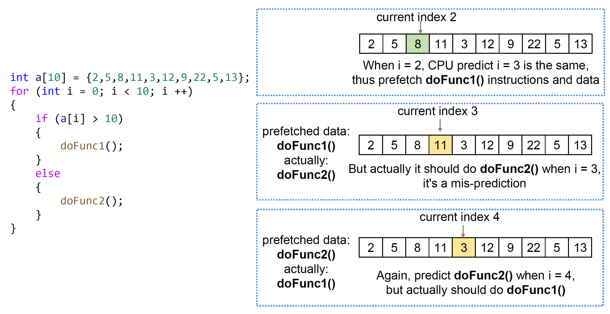
解决方案是对数组元素排序，这样中间就只有一次预测错误了。
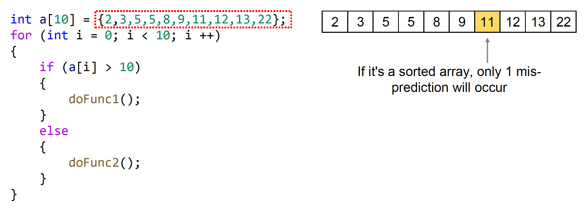
-
-
尽可能消除
if语句，以根除分支预测失败的来源- 比如仅处理现有元素，而非在运行时决定是否应进行处理
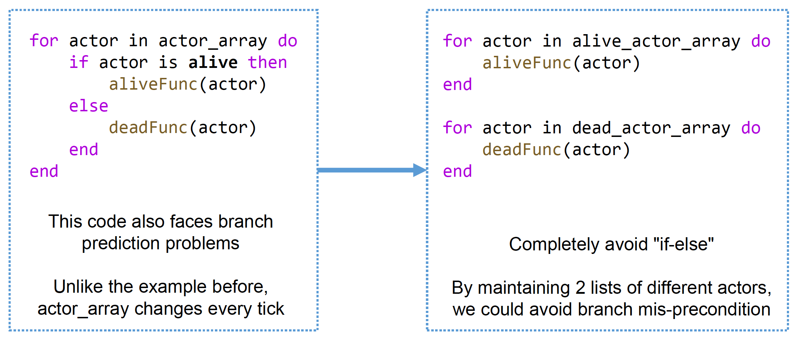
Performance-Sensitive Data Arrangements
接下来考虑数据的排布。同样地，我们需要减少内存间数据的依赖。典型代表便是通过指针相连的链表，通常链表中的元素是不连续的。如果将其中某个元素所在行加载到缓存中，访问下一个元素时很有可能会去加载另一个完整的缓存行（出现了缓存失效），显然会对性能造成很大的影响。
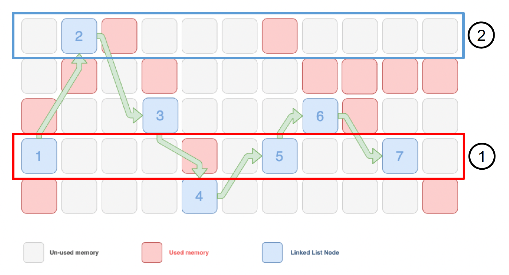
这里便涉及到一对重要的概念：结构数组(array of structure, AOS)和数组结构(structure of array, SOA)，它们分别对应元素为结构体的数组，以及字段为数组的结构体。以粒子的存储为例，AOS 就是一个粒子一个粒子的存储，每个粒子都有位置、速度等属性；而 SOA 就是先存储所有粒子的位置，再存储所有粒子的速度，以此类推。不难发现，当我们想要一次性读取所有粒子的某一个特定字段时，SOA 的存储方式会带来更好的性能。
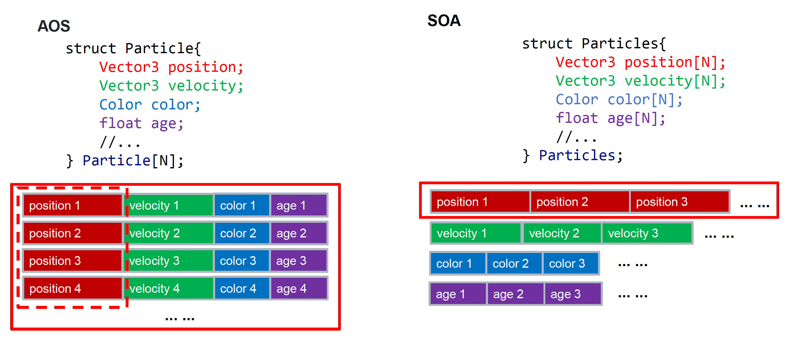
AOS 和 SOA 优缺点总结
by GPT 5.4
- SOA
- 优点：符合人类直觉，代码更自然；适合“按对象”访问；更方便和面向对象设计结合
-
缺点：不利于 SIMD / 向量化；可能读入不需要的数据；GPU / 高性能场景下常常不如 SOA
-
AOS
- 优点：同类数据连续，cache 友好；更适合 SIMD / 自动向量化；只访问需要的字段时更省带宽；适合并行和批处理
- 缺点：代码可读性可能变差；不适合频繁按对象整体操作；封装性较弱；增删字段或维护一致性更麻烦
Entity Component System (ECS)
最后要介绍大名鼎鼎的实体组件系统(entity component system, ECS)。它能将我们前面提到的所有比较零碎的概念串在一起，包括本课程一开始就介绍过的基于组件的设计。
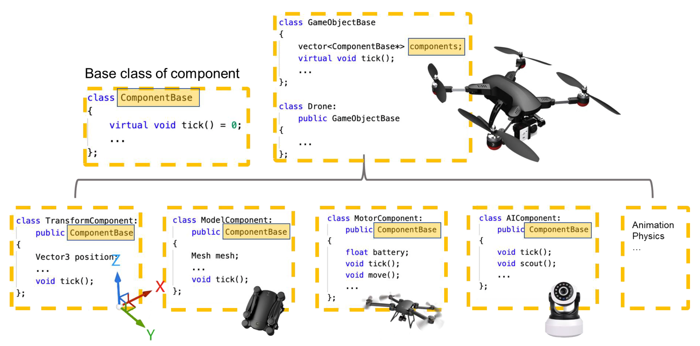
很自然地，我们会想通过 OOP 方法来实现。但正如之前提到的那样，OOP 并不适合游戏开发。而 ECS 正是来解决这个问题的。它是一种以数据为导向构建游戏代码的模式，旨在实现最佳性能（可并行化）。它的三部分分别为：
- 实体(entity)：指代组件集合的 ID（对应之前介绍的游戏对象（GO））
- 组件(component)：被系统处理的数据，不包含逻辑
- 系统(system)：逻辑所在，会读/写组件数据
- 可以同时处理好几类组件的数据
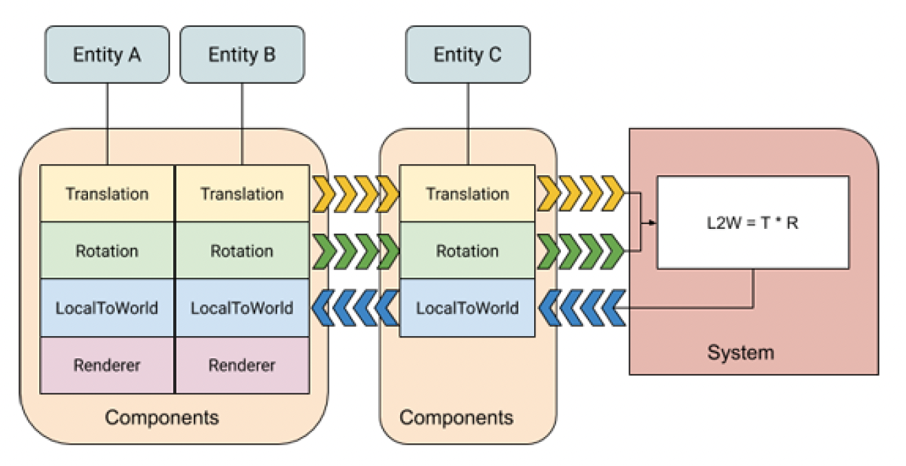
Unity Data-Oriented Tech Stack (DOTS)
这种模式的一个典型应用是 Unity 的面向数据的技术栈(data-oriented tech stack, DOTS)，它是多种技术相结合，共同实现以数据为导向的编程方法，包含以下三类子系统：
- ECS：提供了面向数据的编程框架
- C# 作业系统：提供了一种生成多线程代码的简单方法
- Burst 编译器：可生成快速且优化的原生代码
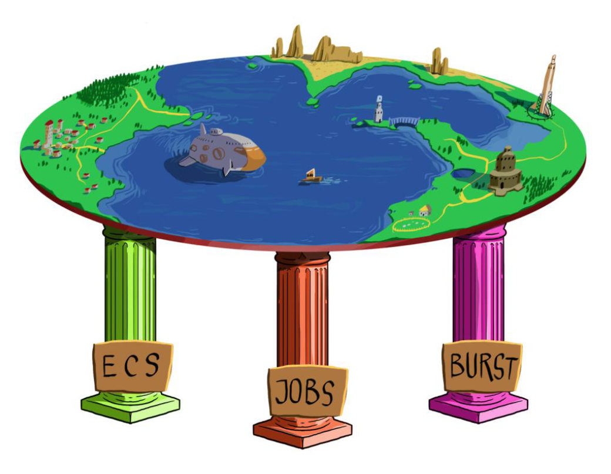
ECS
Unity 引入了一个叫做原型(archetype)的概念，它是一组特定组件的结合。实体便是基于原型分组的，所以可将原型简单理解为游戏对象的类型。这么做有助于我们快速查找指定的实体和组件。
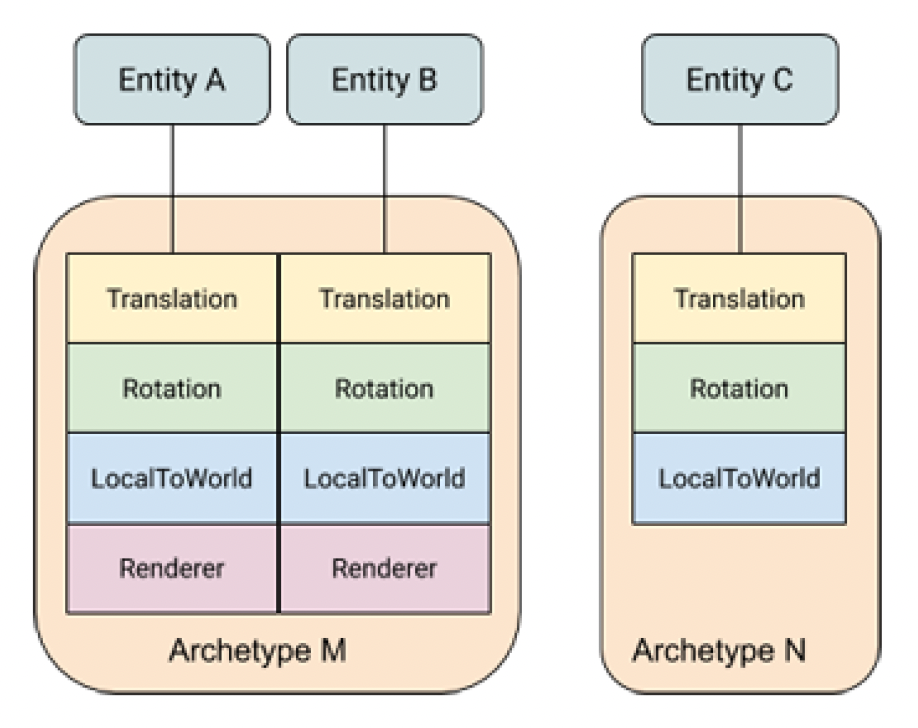
为了充分利用缓存，原型中的相同组件会被紧密地打包成块(chunks)。「块」通常是固定大小的一个内存区域，比如 16KB 大小。
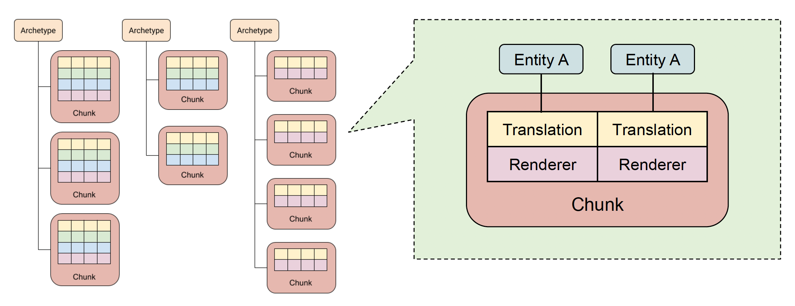
例子
以下代码实现了位置的更新
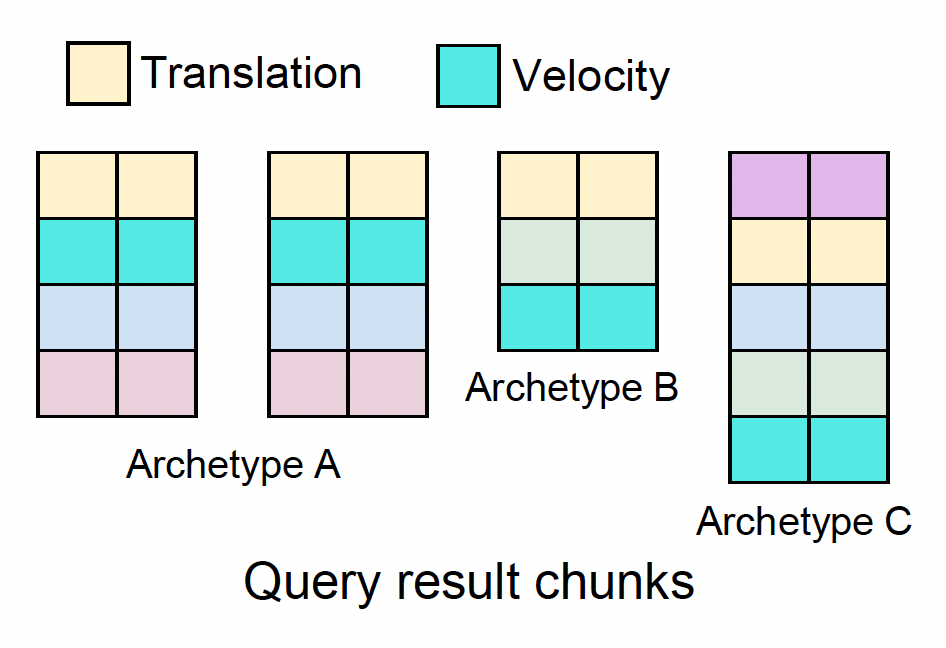
public class MoveSystem: SystemBase {
protected override void OnUpdate() {
// For each entity which has Translation and Velocity
Entities.ForEach(
// Write to Displacement (ref), read Velocity (in)
(ref Translation trans, in Velocity velocity) => {
// Execute for each selected entity
trans = newTranslation() {
// dT is a captured variable
Value = trans.Value + velocity.Value * dT
};
}
)
.ScheduleParallel(); // Schedule as a parallel job
}
}
C# Job System
Unity 为 C# 的作业系统设计了一套原生容器(native container)，这是一种可以在作业内被访问的共享内存。
- 若无原生容器，作业无法输出结果（所有数据均为副本）
- 原生容器支持全部安全检查
- 原生容器需手动释放
// Allocate one float with "TempJob" policy
// Allocator.Temp: Fastest allocation, lifespan is 1 frame or fewer
// Allocator.TempJob: Slower than Temp, lifespan is 4 frames
// Allocator.Persistent: Slowest allocation, can last as long as needed
NativeArray<float> a = newNativeArray<float>(1, Allocator.TempJob);
...
// Need to dispose manually for unmanaged memory
a.Dispose();
鉴于原生容器的特性，我们还需要一个安全系统，支持对作业进行安全检查，比如越界检查、释放检查、竞态条件检查等。
- 向每个作业发送其运行所需数据的副本，以消除竞态条件
- 作业只能访问可复制数据类型（引用无效）
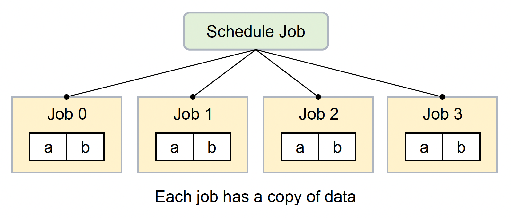
public structJob: IJob {
public float a;
public float b;
public void Execute() {
...
}
}
High-Performance C# and Burst Compiler
高性能 C#（HPC#）是 C# 的一个子集，它放弃大部分标准库功能（如 #!cs StringFormatter、#!cs List、#!cs Dictionary 等），并且禁止内存分配、反射、垃圾回收和虚函数调用。
Burst 编译器通过 LLVM 将 IL/.NET 字节码转换为高度优化的原生代码，为特定平台生成预期的机器指令。相比直接使用 C# 自带的编译器，性能得到了不小的提升。
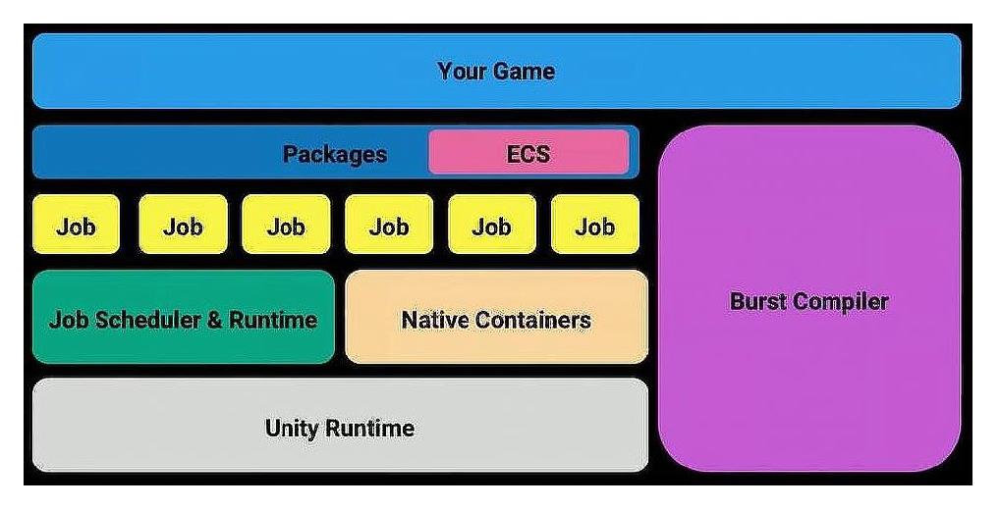
Unreal Mass Framework
ECS 的另一个例子是 Unreal 的 Mass 系统。
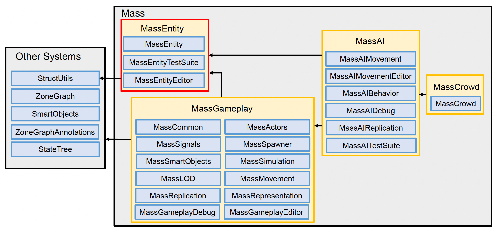
Entity
其中一个重要部分是 MassEntity，它对应了 ECS 的实体。
FMassEntityHandle是 ECS 实体的纯 IDIndex代表在FMassEntityManager的实体数组中的索引SerialNumber作为索引的盐值(salt)- 释放旧实体
- 用相同索引创建新实体
- 但
SerialNumber会递增，因此 ID 会发生变化
struct FMassEntityHand1e {
...
int32 Index = 0;
int32 SerialNumber = 0;
...
}
struct MASSENTITY_API FMassEntityManager {
...
TChunkedArray<FEntityData> Entities;
TArray<int32> EntityFreeIndexList;
...
}
Component
Mass 的组件部分和 Unity 类似，每一类实体也有对应的原型(archetype)。不过组件是由片段(fragments)和标签(tags)两部分构成，其中标签是用于过滤不必要处理的常量布尔组件。
struct FMassArchetypeCompositionDescriptor {
...
FMassFragmentBitSet Fragments;
FMassTagBitSet Tags;
FMassChunkFragmentBitSet ChunkFragments;
FMassSharedFragmentBitSet SharedFragments;
}
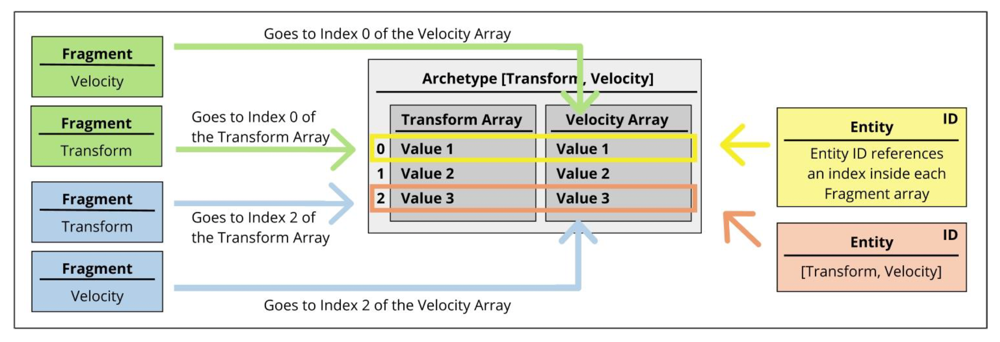
System
最后来看系统部分。MassEntity 里的 ECS 系统是派生自 UMassProcessor 的处理器。它有两个重要的接口（高亮标出）：
class MASSENTITY_API UMassProcessor: publicUObject {
...
protected:
virtual void ConfigureQueries() PURE_VIRTUAL(UMassProcessor::ConfigureQueries);
virtual void PostInitProperties() override;
virtual void Execute(
FMassEntityManager& EntityManager,
FMassExecutionContext& Context
) PURE_VIRTUAL(UMassProcessor::Execute);
...
}
-
ConfigureQueries()：片段查询(fragment query)- 在处理器初始化时运行
- 使用
FMassEntityQuery筛选符合系统需求的实体原型（其实只拿到片段的引用而非实际数据） FMassEntityQuery会缓存筛选出来的原型，以加速之后的执行
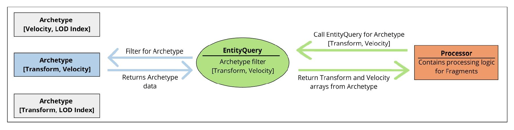
void UMassApplyMovementProcessor::ConfigureQueries() { EntityQuery.AddRequirement<FMassVelocityFragment>(EMassFragmentAccess::ReadWrite); EntityQuery.AddRequirement<FTransformFragment>(EMassFragmentAccess::ReadWrite); EntityQuery.AddRequirement<FMassForceFragment>(EMassFragmentAccess::ReadWrite); EntityQuery.AddTagRequirement<FMassOffLODTag>(EMassFragmentPresence::None); EntityQuery.AddConstSharedRequirement<FMassMovementParameters>(EMassFragmentPresence::All); } -
Execute(...)：void UMassApplyMovementProcessor::Execute( FMassEntityManager& EntityManager, FMassExecutionContext& Context ) { // Clamp max delta time to avoid force explosion on large time steps (i.e. during initialization). constfloatDeltaTime = FMath::Min(0.1f, Context.GetDeltaTimeSeconds()); EntityQuery.ForEachEntityChunk( EntityManager, Context, [this, DeltaTime](FMassExecutionContext& Context) { const int32 NumEntities = Context.GetNumEntities(); const TArrayView<FTransformFragment> LocationList = Context.GetMutableFragmentView<FTransformFragment>(); const TArrayView<FMassForceFragment> ForceList = Context.GetMutableFragmentView<FMassForceFragment>(); const TArrayView<FMassVelocityFragment> VelocityList = Context.GetMutableFragmentView<FMassVelocityFragment>(); for (int32 EntityIndex = 0; EntityIndex < NumEntities; ++EntityIndex) { FMassForceFragment& Force = ForceList[EntityIndex]; FMassVelocityFragment& Velocity = VelocityList[EntityIndex]; FTransform& CurrentTransform = LocationList[EntityIndex].GetMutableTransform(); // Update velocity from steering forces. Velocity.Value += Force.Value * DeltaTime; ... FVector CurrentLocation = CurrentTransform.GetLocation(); CurrentLocation += Velocity.Value * DeltaTime; CurrentTransform.SetTranslation(CurrentLocation); } } ); }
评论区